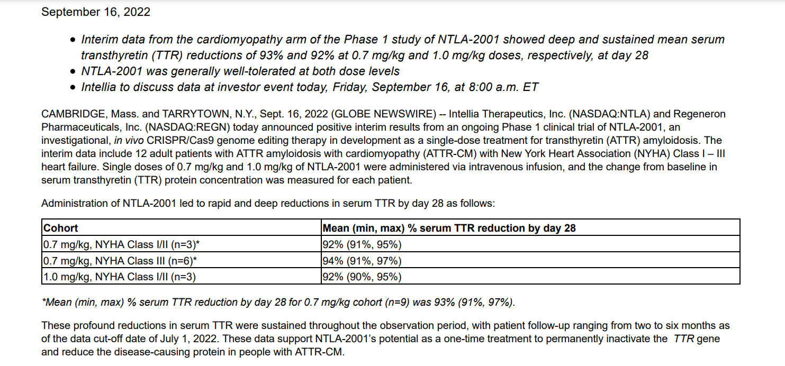
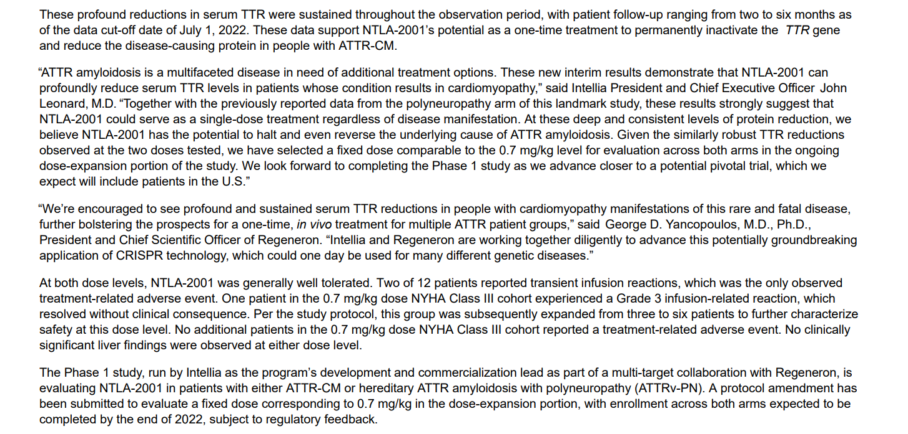

Data Readouts
This section is about me taking actual clinical data readouts and breaking them down. I will take screenshots of key sections of the data release and explain what it means. I will use my understanding of the science I focus on to show you how to evaluate data. The key is to then take that data and compare it to other competitors and the current standard of care. Any data read out can look good on its own. Then it has to be put into context to know where the data fits into the competitive landscape. I focus on Oncology and Genetics mostly so that is the kind of data you will learn about here. The key to learning to read any data is to figure out what the key measurements are for any indication. Oncology has its own like Overall Survival and RECIST response rates. In the same way Immunology or CNS indications have their key tests. The other important part is to ensure the trail design is valid. Too many times companies do not create good trails as they try to skew data to make it look better than it really does.
- Data Readouts:
- RLY-4008 Phase 1 Data
- NTLA-2001 Phase 1 Data
RLY-4008 Phase 1 Data
Link to the original data pdf so you can follow along RLY-4008 Phase 1 Data
Here we will look at the data from RLY-4008. The image below will open in a full window so you can read it and follow along with the data. The first image is the top section of the press release. Most of these press releases start the same. They have a few bullet points to point out key data. I will read them, but too many times companies will put data in the bullet points to make things look great, but when you read the actual data further down, it turns out to be bad. Never just read only the bullet points as many investors do this and get the wrong impression.
After the bullet points, there will be the section that highlights the data along with company comments on the data. This always comes with the quotes to highlight the company comments. I often call this the spin comments. Many times, when data is bad, the company will put spin on it in their comments to try to make it sound better than it really is. For this data read out of RLY-4008, they are pointing out a subset of patients that were treated only at the phase 2 dose. They show 15 of 17 responding for 88% Overall Response Rate. I don't have any problems with this type of data cutout. I still would look over the rest of the patients which showed 66% Overall Response Rates across all dose cohorts. The one word of caution I have is that a really awesome response rate of 88% can be misleading in these small patient populations as they often do not hold up to those high levels as the trials progress and the patient populations get bigger. Most FGFR2 inhibitors have response rates in the 20% to 30% which makes 88% more than 3x the response rates compared to other drugs in this space. That is a game changer if it holds up that level of response or doesn't give up a ton going into larger patient populations.
The very first thing we see in the data section is they treated 195 total patients, of which, 89 of them were treated at the phase 2 dose of 70mg. The actual data is based on only 17 of those patients which reached enough follow up to be included in the data so far. That is only about 19% of the patients in the total trial were included. This still has a long way to go on data. Of the 15 patients that responded 13 remain in response with 1 of them only coming off treatment to get their tumor removed with curative intent. That is very positive as the study drug shrank the tumor enough that they could remove it. The 2 people who did not respond were still in stable disease. They did not progress or get worse. That is another very positive data point. Out of all the patients who were treated in all dose cohorts, the response rate was 63% which is still more than double the historical rate for other FGFR2 inhibitors.
The last section is the Safety Data. They don't provide very in depth data for the safety at this point other than to say that most have been mild to moderate and manageable. This is encouraging as many FGFR2 inhibitors have a ton of toxicity. We will have to wait and see more detailed data on safety.
Overall, I would sum this up as very powerful early data in an indication which typically has low response rates and high toxicity. We still have 80% of the patients to see data on and it could change the response rate. The key now is to see more of the data develop to ensure the response rates stay strong and the safety stays clean.
NTLA-2001 Phase 1 Data
Link to the original data pdf so you can follow along NTLA-2001 Phase 1 Data
This starts out with the standard bullet statements which cover the indication, the biomarker data, and basic safety statement. There are 12 patients for aTTR Cardiomyopathy treated with 2 possible doses of .7 mg/kg and 1.0 mg/kg. This data sets the stage for the study.
Then comes the chart for 28 days after treatment. They break out 3 dose cohorts across different patient demographics. You can see the first dose was tested in patients with 2 different classifications of aTTR. The aTTR serum levels were reduced 92% and 94% in this .7 mg/kg dose. This compares with RNAi therapies like Vultisiran which had 88% serum aTTR reduction. This is slightly better on the biomarker data. They will still have to do a bigger study with key endpoints for Polyneuropathy and Cardiomyopathy indications.
The next section starts out with the company comments about the study. The key data here is the safety section. With RNAi studies, the drugs are taken once every 3 months or 4 times a year. About 15.6% of patients have serious side effects from these chronic therapies. This is where permanent gene editing can compete. There is going to be a percentage of patients who don't want to deal with the side effects they feel every time they have to administer an RNAi injection. Where they might have trouble competing is on acceptance by insurers. The RNAi product in this space costs upward of $460,000 per year to treat a patient. They would have to demonstrate long term efficacy to show insurers they have a cost benefit. I suspect these treatments will be around $2 million per patient.
Overall, this data is very encouraging as it shows biomarker data that is superior to current treatments and a safety profile that is safer than the current treatments. Its going to take a lot more data before we know for sure that this therapy will be competitive with RNAi. It needs to hold efficacy and safety to be competitive.
* I am not a doctor. This is not designed to be Medical Advice. Please refer to your doctor for Medical Decisions